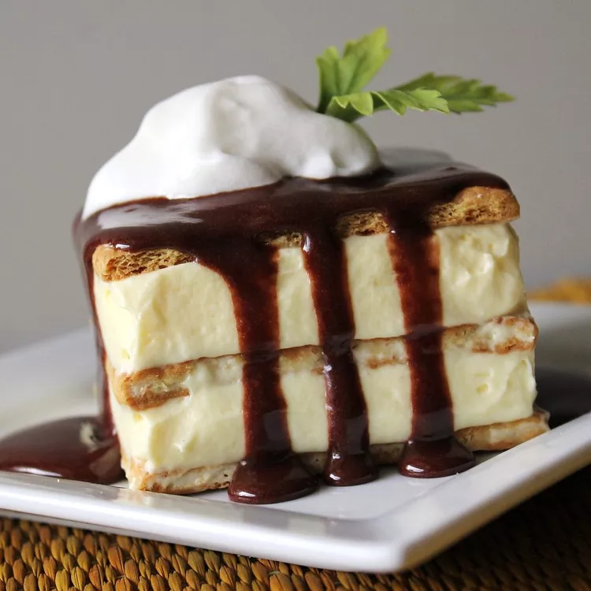

Ingredients
- 2 individual packages graham crackers
- 3 cups cold milk
- 2 (3 ounce) packages instant vanilla pudding mix
- 1 (8 ounce) container frozen whipped topping, thawed
- 1 (16 ounce) package prepared chocolate frosting
Directions
Step 1
Line the bottom of a 9x13-inch pan with a single layer of graham crackers.
Step 2
Combine cold milk and pudding in a large bowl; whisk briskly for 2 minutes. Mix whipped topping into pudding mixture until combined. Spread 1/2 of the pudding mixture over graham cracker layer. Top with another layer of graham crackers. Cover with remaining pudding. Top with a final layer of graham crackers.
Step 3
Frost top with chocolate frosting. Refrigerate for at least 2 hours before serving to allow graham crackers to soften.
